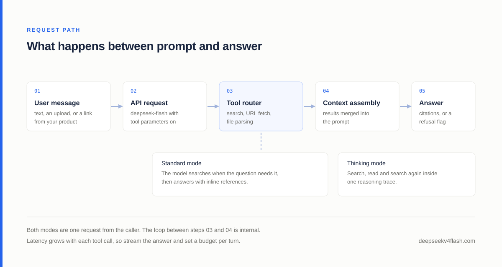
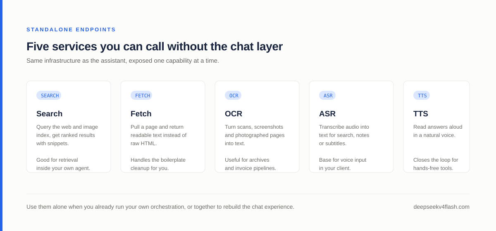
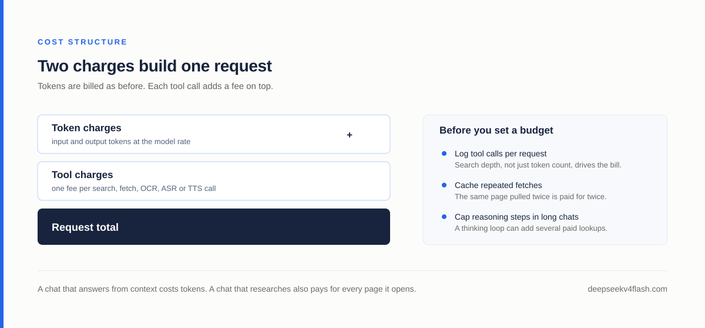

DeepSeek's chat product has always done more than answer questions. It searches, opens pages, reads uploaded documents, understands speech and filters risky replies. Building the same thing yourself used to mean wiring several vendors together and keeping the handoffs straight in your own code. That work has moved into the model call.
V4.1-Flash, the model developers address as deepseek-flash, now accepts a set of optional tools on the Messages, Responses and Chat Completions endpoints. Switch one on and DeepSeek runs the tool, folds the result into the prompt and returns a final answer. You send one request and receive one response.
Search, files, links and a safety flag
Five capabilities sit on the standard endpoint:
- Web search. With
deepseek_web_searchenabled in normal mode, the model decides when a question needs outside information, queries a web or image index, and answers with citations attached. - Deep-thinking search. The same switch, used in thinking mode, lets the model search and read pages in the middle of a multi-step reasoning pass. It can revise a search after seeing the first result instead of committing to one query.
- File input. PDFs, Office documents and images are accepted. DeepSeek extracts plain text or parses layout, including mixed text and images, then puts the result into context.
- Link reading. Turn on
deepseek_read_urland any URL in the user's message gets fetched and used as context. - Safety checks. A screening parameter reviews input and output and returns a refusal marker when content trips a rule.
The loop between those steps is not yours to manage. Tool choice, the calls, and the context assembly all run on DeepSeek's side. That removes a familiar class of bug from retrieval pipelines: state lost between hops, tool output dropped because an intermediate step timed out, context order scrambled by a queue.
The trade-off is visibility. You receive the answer, not a transcript of every lookup. Log the parameters you send and the citations you get back. Treat what happens between them as an operated black box, and design your error handling around that assumption.

Two search behaviors in one parameter
In normal mode, search behaves like a lookup. The model notices a gap, runs a query, and writes an answer with references. This is the mode to use for product descriptions, current events and questions with a factual answer somewhere on the open web.
In thinking mode, search becomes part of the reasoning process. The model can start from a broad query, read what comes back, and narrow the next one. For research questions, that produces better coverage than a single search, at the cost of more tool calls and more time before the first token arrives.
Streaming matters here. A thinking response that spends six seconds on lookups looks broken in a non-streaming client. Show progress, or at least a typing state, and put a ceiling on how many steps a single turn may take.
Standalone endpoints for teams that already own the loop
The same infrastructure is sold separately as Search, Fetch, OCR, ASR and TTS. That matters for two kinds of teams. If you already run an agent framework with your own tool router, you can call Search and Fetch directly and keep control of the sequence. If you are building a voice product, OCR, ASR and TTS cover the pieces that usually come from three different vendors. If you are weighing whether to keep an existing OCR or TTS contract, our pricing page lists what each plan allowance covers, which makes the comparison concrete.

A working client you can clone
DeepSeek published a lightweight front-end demo that uses the new endpoints and imports an existing chat history. The hosted build and the source are published under the deepseek-ai organization on GitHub, in a repository named chat-demo.
Read it before you design your own client. It shows the request shape for each capability and a workable split between the interface and the server. Most of the value is in the parts that are boring: how uploads are passed, how citations are rendered, how a refusal is displayed without confusing the user.
How the bill is built
Token pricing works as before. Tool use adds a second charge, billed per call. A conversation that stays inside its context is a token calculation. A conversation that researches is also paying for every page it opened.
| Charge | What triggers it | Where it grows |
|---|---|---|
| Input tokens | Prompt, conversation history, parsed file text, fetched pages | Long documents and multi-turn chats |
| Output tokens | Reasoning steps and the final answer | Thinking mode on hard questions |
| Tool calls | Each search, fetch, OCR, ASR or TTS call | Agent loops that keep looking things up |

Instrument the tool calls, not only the token counter. Search depth is the variable that surprises teams: a thinking-mode turn on a broad question can run several paid lookups before it writes anything. Cache pages you fetch more than once. Set a step budget per conversation and log when it is hit. Before you commit a budget, the current V4.1 Flash and V4 Pro subscription plans and their usage allowances are compared on our pricing page.
Before you put it in front of users
- Turn on the safety parameter if the app is public. It gives you a baseline filter, not a finished compliance program. Content review, model registration and AI labeling obligations stay with you where they apply.
- Measure latency per stage. Search and file parsing add time before the first token, and the difference shows up in perceived quality more than in benchmarks.
- Test with the documents your users actually upload. Scans, tables and two-column PDFs are where extraction fails quietly.
- Keep a fallback for tool failures. A search that returns nothing should not turn into an empty answer.
What this changes for builders
The distance between an idea and a working assistant is shorter. A team that wants search plus document reading no longer needs three vendors and a queue to keep them in order. That work is now a parameter, and the effort moves up a level: interface, permissions, retention, and the parts of the experience that are actually yours.
What it does not do is make the product decisions. Choosing when to search, when to read a file, and when to admit the answer is not in the context is still design work. The API removes the plumbing around those choices. It does not make them.